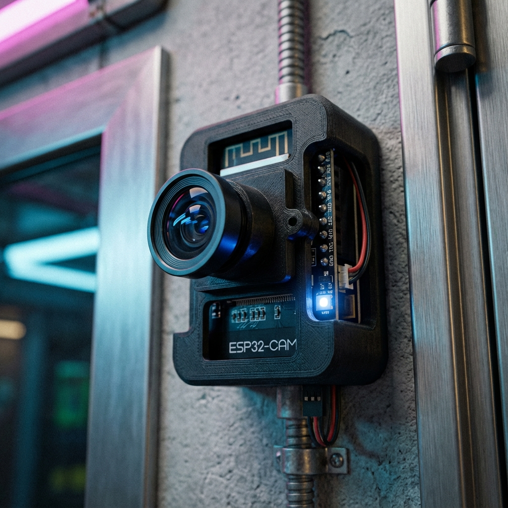
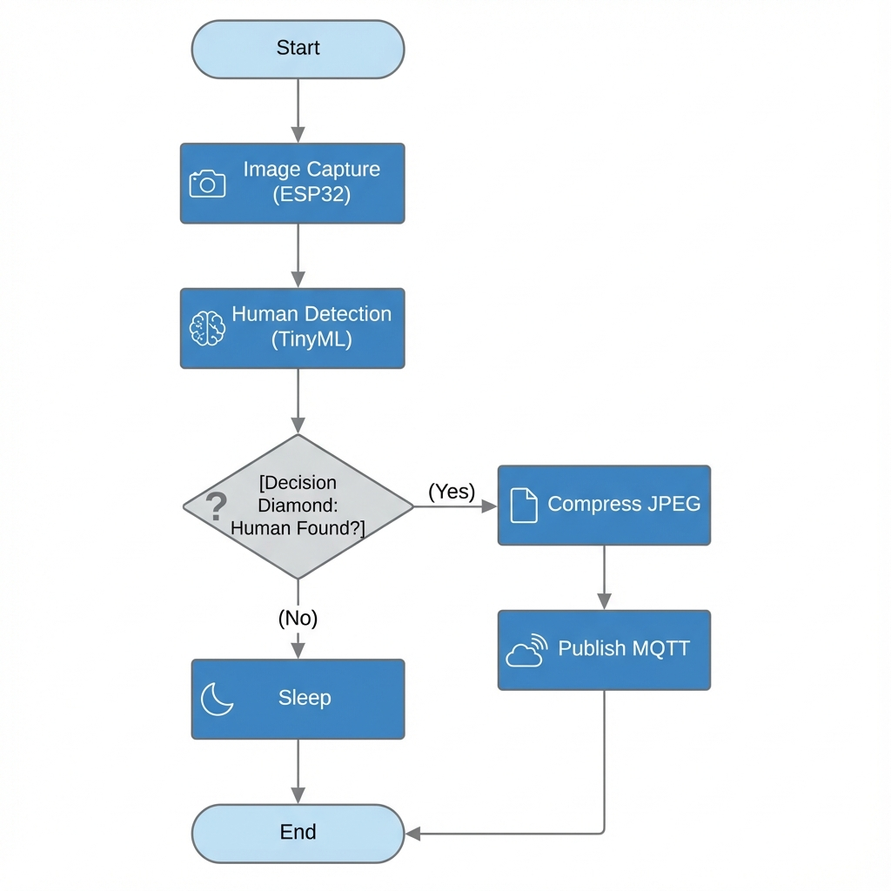
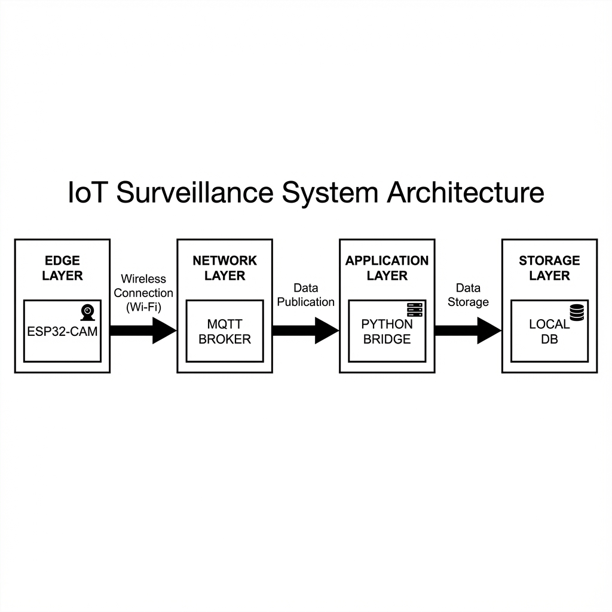
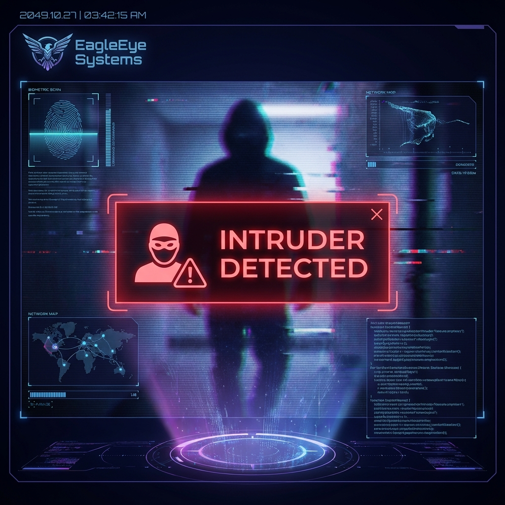

What this document is. A print-ready production pack for the A1 poster: the full design brief, the real images we already have (embedded below), clean drop-in slots for the images still needed, and a checklist of what's missing. Hand it to a designer or use it yourself in Canva/Figma. Style = clean academic.
| Project | EagleEye — Intelligent Edge AI Surveillance System |
| Team | Murtaza Khalid (BSCE22004) · Huzaifa Khan (BSCE22025) · Haseeb Ahmed (BSCE22048) |
| Roles | Murtaza — Edge AI & Firmware · Huzaifa — Cloud & Mobile App · Haseeb — Audio Threat Detection |
| Supervisor | Dr. Rehan Hafiz (Professor; Director, ITU ORIC) |
| Co-Supervisor | Dr. Rehan Ahmed (Assistant Professor & Chairperson) |
| Affiliation | Dept. of Computer & Software Engineering, Faculty of Engineering — Information Technology University (ITU), Lahore |
| Deployed model | v7.16 — 96×96 RGB depthwise CNN, INT8 (on the ESP32-CAM) |
| Repo (QR) | github.com/muhammadAB123/fyp-eagle-eye |
Judge-ready rigor line: "Selected from 18 trained variants — INT8 quantization, hard-negative mining, knowledge distillation, Optuna search, depthwise-separable architectures — converging on a custom from-scratch CNN holding >90% accuracy entirely on-device." (Peak across the line: 92.35%.)
| Item | Spec |
|---|---|
| Canvas | A1 portrait, 594 × 841 mm, set at 300 dpi (7016 × 9933 px), 5 mm bleed, 15 mm safe margin |
| Export | PDF/X, CMYK, 300 dpi — confirm with the print shop before sending |
| Readability | Title readable at 3 m, headings at 1.5 m, body at 1 m. Title ≥ 90 pt · headings ≥ 42 pt · body ≥ 28 pt · captions ≥ 22 pt |
| Text budget | ≤ 800 words total. Bullets / short phrases, not paragraphs. ~30–40% white space |
| Reading path | One path: top-left → down left column → center → right column → footer. Number sections 1–6 |
#1F4E79 primary blue · #2196F3 accent teal · #1A1A1A ink · #555 caption · #F4F6F8 panel · #2E7D32 green · #E53935 alert red. One clean sans-serif (Inter / Source Sans 3, Montserrat for headings). Bold headings, regular body; max 2 weights per size.
+--------------------------------------------------------------+ | HEADER BAND | | [ITU logo] EAGLEEYE -- Intelligent Edge AI Surveillance | | one-line subtitle [SparkUp logo] | | team (roll#s) . supervisor . co-supervisor . ITU CSE | +----------------------------+---------------------------------+ | (1) THE PROBLEM | (4) SYSTEM ARCHITECTURE *star* | | | full cloud diagram, large | | (2) OUR SOLUTION | | | + hero device image +---------------------------------+ | | (5) HOW IT WORKS (pipeline) | | (3) KEY FEATURES | Capture->AI->Alert->Phone | | (icon bullets) +---------------------------------+ | | (6) RESULTS + TECH STACK | | | metric tiles + logo row | +----------------------------+---------------------------------+ | FOOTER: team . supervisors . ITU | [QR demo][QR repo] Spark| +--------------------------------------------------------------+
Goal: see real intrusions, from anywhere, privately, with no subscription.
EagleEye runs a neural network on the camera itself. A low-cost ESP32-CAM decides on-device whether a human is present — images are analysed locally, not in the cloud. On an intruder it pushes a photo alert to your phone, and you can open an on-demand live view and pan the camera — from any network, anywhere (Wi-Fi or 4G/LTE). The camera reaches out to the cloud and stays connected, so there is no static IP, no port-forwarding, no on-site PC. End-to-end encrypted; runs entirely on free tiers.
Capture frame → On-device AI: human? → yes → Snap JPEG → Upload + Alert → Push to phone; on request → Live video via cloud relay. No → keep watching.
Only confirmed humans trigger an alert — no hours of empty footage.
ESP32-CAM · Edge Impulse (TinyML) · MQTT / HiveMQ Cloud · Cloudinary · Firebase · Deno Deploy relay · React Native + Expo · TLS / WebSocket.
Why novel: Edge AI on a microcontroller (privacy + zero inference cost) + an outbound-only architecture that works on any network — the pattern commercial IoT (AWS IoT, Ring/Nest) uses, rebuilt at $0/month.
SITE A CLOUD ANYWHERE +---------------+ outbound +--------------+ wss/HTTPS +----------+ | ESP32-CAM |== TLS =======>| HiveMQ (MQTT)|<===============| Phone | | on-device AI | status/alert | broker | commands | app | | + servo pan | <== commands | | status/alert | (RN/Expo)| | | +--------------+ +----------+ | image ------+-- HTTPS -----> Cloudinary ------------> photo in app | alert ------+-- REST -----> Firebase ------------> alert history | video ------+-- wss (on-demand) -> Deno relay -------> live view +---------------+ Every arrow points OUT from the device. Put a small lock icon on each link (end-to-end TLS).

assets/hardware_setup.png
assets/local_flowchart.png
assets/system_architecture.png
assets/alert_interface.pngReal captures: backend/captures/ has 50+ genuine ESP32-CAM detection JPEGs, but most are flash-overexposed and rotated — not poster-grade. Take one clean fresh capture for the "real detection" slot below.
docs/assets/ with the exact name, then ask me to regenerateassets/itu_logo.pngDrop the files in and tell me "regenerate" — they'll appear embedded in place of the dashed slots, and I'll add the QR codes.